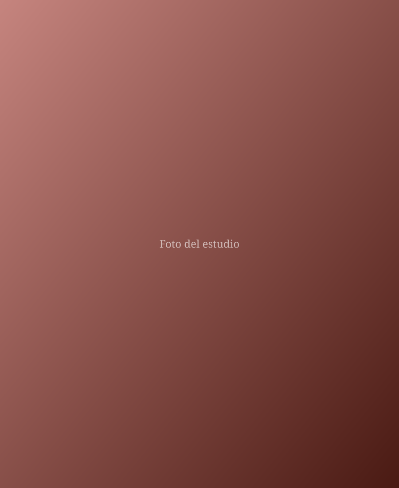
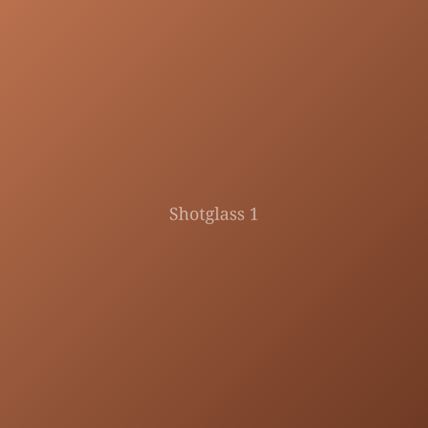
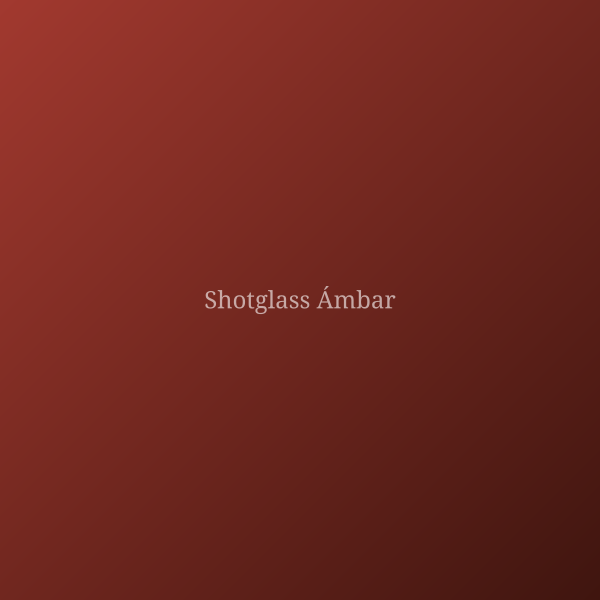
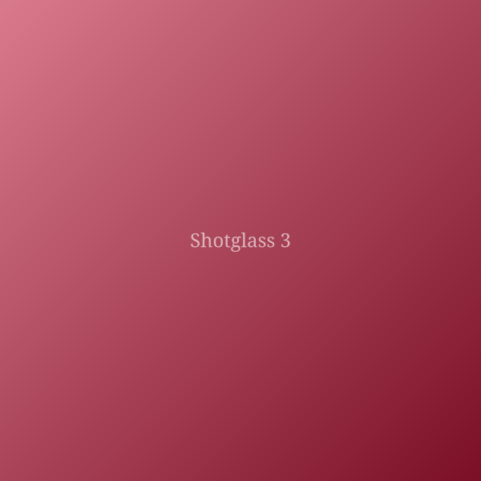

Hecho a mano en Puerto Rico
Cerámica Objetos
Piezas de cerámica hecha a mano en Puerto Rico, moldeadas con paciencia y arcilla local. Una vertiente de Proyecto Antillana, dedicado a la fabricación de baldosas de cerámica con materiales de nuestra propia tierra.

Sobre la marca
Arcilla, paciencia y raíz local
Cerámica Objetos nace en un estudio casero en Bayamón, Puerto Rico, donde cada pieza se forma, se cuece y se termina a mano, una a la vez. No hay dos piezas idénticas: cada una lleva las huellas del proceso y del lugar de donde viene.
Este proyecto es una vertiente de Proyecto Antillana, una iniciativa dedicada a la fabricación de baldosas cerámicas utilizando arcilla local de Puerto Rico. Esa misma filosofía —trabajar con lo que la tierra antillana nos ofrece— guía cada objeto que sale de este taller: honesto, artesanal y con identidad propia.
Al elegir una pieza de Cerámica Objetos, apoyas un proceso lento, hecho con las manos y pensado para durar.
Piezas
Galería
Una muestra de piezas hechas a mano. Cada pieza es única y las cantidades son limitadas.





Cómo comprar
Hagamos un pedido
Escríbeme por el formulario, o directamente por redes sociales, WhatsApp o correo. Te respondo lo antes posible con disponibilidad y precios.
- Instagram @TU_USUARIO
- WhatsApp +1 (787) 000-0000
- Correo hola@ceramicaobjetos.com
- Ubicación Bayamón, Puerto Rico